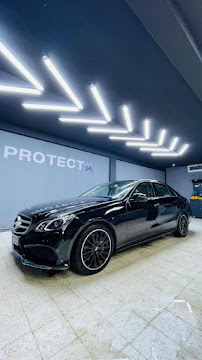
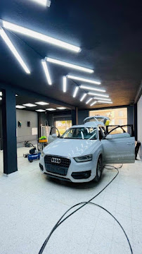
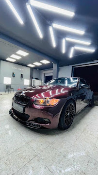

Nos prestations
Chaque prestation démarre par une inspection de la peinture et de l'habitacle. Le traitement proposé est adapté à l'état réel du véhicule — jamais à un forfait unique.

Un revêtement vitrifié à base de silice se lie chimiquement à la peinture pour former une couche dure, hydrophobe et résistante aux UV. Résultat : une brillance profonde, une glisse à l'eau immédiate et une surface qui reste protégée des salissures, du goudron et de l'oxydation pendant plusieurs années.
Le service inclut systématiquement une décontamination complète et une correction légère avant application, pour que la céramique se pose sur une surface saine.
Formules
Une protection d'entrée de gamme pour un entretien facilité et une brillance immédiate.
Le compromis le plus demandé — protection durable pour un usage quotidien.
Protection longue durée pour véhicules haut de gamme ou exposition intensive.
Tarifs indicatifs, communiqués précisément après inspection selon la taille, l'état et la couleur du véhicule.
Le polissage machine multi-étapes efface les hologrammes, tourbillons, rayures superficielles et traces de lavage mal maîtrisé. Chaque panneau est traité individuellement, sous éclairage dédié, jusqu'à obtenir une surface nette et uniforme.

Élimination des contaminants collés avant tout contact abrasif.
Mesure d'épaisseur et cartographie des défauts panneau par panneau.
Zone d'essai pour valider le grain d'abrasif et le pad adaptés.
Passage machine sur l'ensemble de la carrosserie, panneau par panneau.
Lustrage fin et inspection finale sous lumière LED directionnelle.

Sellerie tissu ou cuir, moquettes, plastiques et vitres reçoivent un traitement complet : extraction en profondeur, décontamination anti-bactérienne et finition protectrice. L'objectif : un habitacle qui retrouve son aspect d'origine, odeurs comprises.